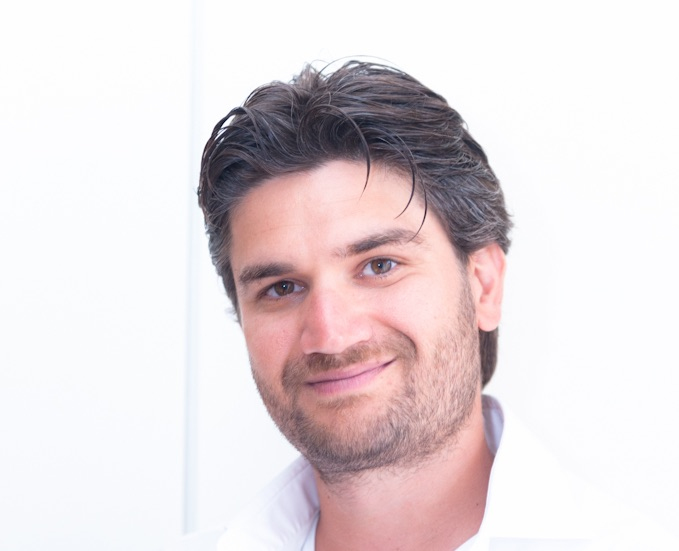

I am a quantitative and computational marine ecologist specialized in research synthesis. My scientific work is on marine conservation, fishery sciences, population dynamics, and quantitative ecology with a special interest in sharks and rays. I combine ecology, statistical modeling, and computer science to approach questions on animal abundance and distribution, species interactions, large marine predators, top-down control, structure and function of large marine ecosystems.
I am an assistant professor of fisheries management and conservation at Virginia Tech in the Department of Fish and Wildlife Conservation
{% comment %}
{% endcomment %}